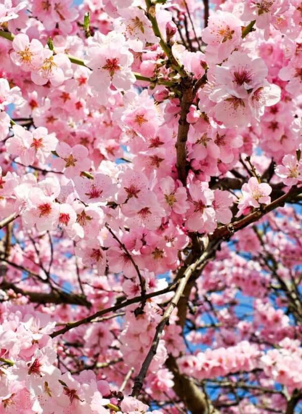
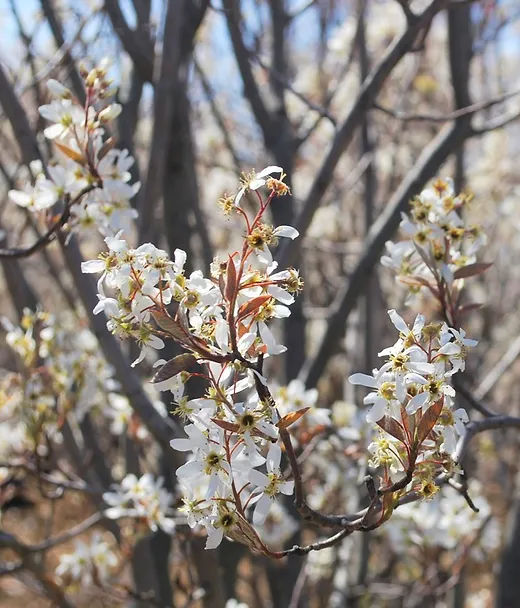
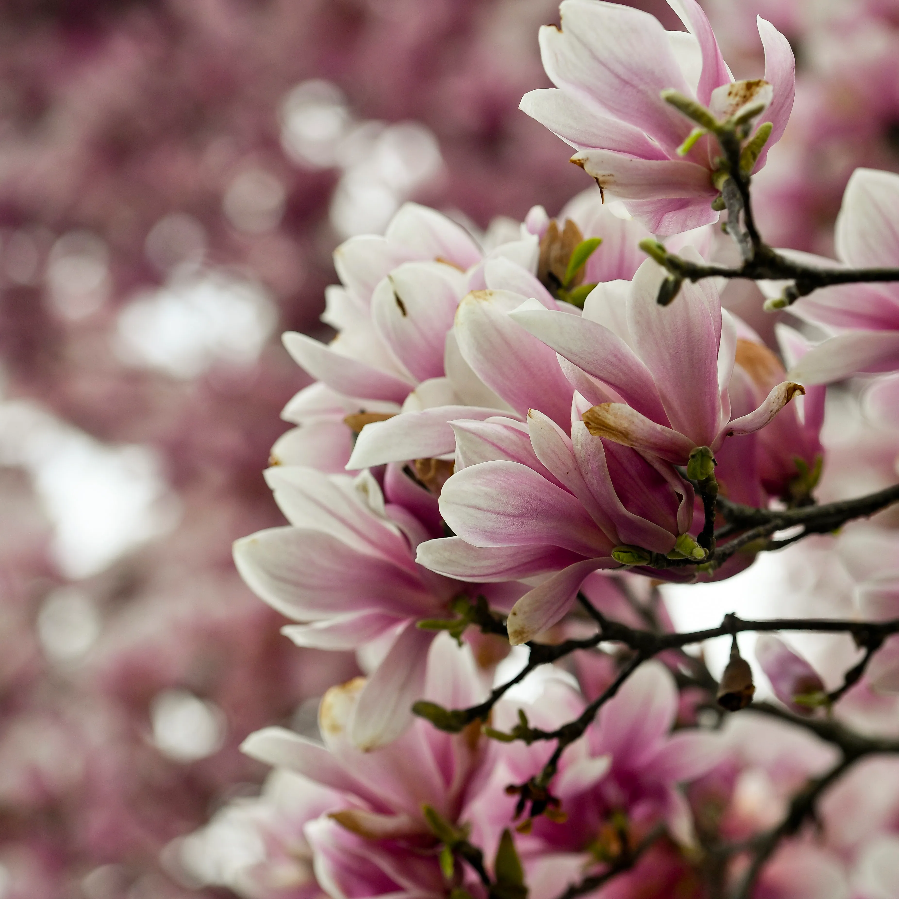

Cherry Blossoms
Known as Sakura in Japan, Cherry Blossoms are Native to the Northern hemisphere. You can watch there pink petals slowly drift in the wind near the end of spring; their bloom and wilt being symbols of life and death. For there abundance in the country and popularity they are the symbol placed on the Japanees 100 yen coin.

Serviceberry
Growing naturally in North America, serviceberry blooms are a sign of the arival of spring across the continent. It is thought that the flower got its name from blooming at around the same time that early new english settlers would hold their funeral services.

Magnolias
Magnolias, a symbol of luck and stability, are native to east and southeastern Asia, but have since spread across the globe. Magnolia trees are known for there longer than usual life spans with tree lives ranging from anywhere between 80 to 120 years.